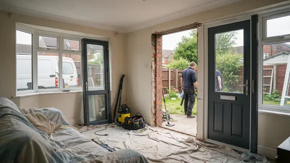

Generated photo
Generated photoGenerated for this demo. Not a photograph of a real job.
Start with what has failed
A cloudy window is not a worn out window. It is a window whose glass has stopped being sealed. Two panes, a spacer bar round the edge holding them apart, and a band of sealant bonding the lot together. When that sealant lets go, damp air gets in, and on a cold morning it condenses where you cannot reach it.
So the first question is not how old the windows are. It is whether the thing that failed is the glass or the frame, and those are two very different bills.
What is inside the glass
The five minute test
Go and stand in front of the window on a cold morning and work through this.
- Is the bloom between the panes, or on the inside face? Wipe the room side of the glass. If it clears, that is ordinary room condensation and it is a ventilation question, not a window one. If it does not, the seal has gone.
- Does the window open and close properly? Open it, close it, lock it. If the handle works sweetly and the sash pulls up evenly on the gasket, the frame is doing its job.
- Push gently on the corners of the frame. You are feeling for movement and for softness in timber. Flex is a problem. A bit of a creak on an old uPVC frame is not.
- Look at the outside bead and the cill. Water sat in the bead rebate is the usual reason a unit failed early, and it will do the same to the next one unless it is put right while the glass is out.
- Look at the hinges and the handle. If they are worn out as well, price those at the same time, because the labour is already there.
What the answers mean
Cloudy glass with a sound frame, a handle that works and hinges that have life in them is a new sealed unit. It is a short visit per window and it is the whole job.
Cloudy glass with a frame that has dropped, a handle that will not lift properly and hinges that drag is a conversation. You can do all three, and sometimes the parts and the glass together get close enough to a new window that a new window makes more sense. That is a reasonable thing for somebody to say to you with the figures in front of them. It is not a reasonable thing for somebody to say on the phone before they have seen it.
Cloudy glass in a timber frame with rot in the bottom rail is a repair to the timber first. New glass in a rotten frame is money burnt.
What to be careful of
A fogged window is the classic way into a whole house quote. The tell is somebody who looks at one cloudy pane and starts talking about the other eight windows without opening any of them. There is nothing wrong with being shown the option. There is something wrong with never being shown the small one.
The other thing to watch is a very quick price for a unit with no measure. Sealed units are made to the measured size, with the thickness, any pattern and any coating matched to what is there. Somebody quoting without that is guessing, and a unit that does not match is obvious the moment it is in.
What to do this week
Count them. Walk round the house, write down which windows are fogged and which rooms they are in, and look at whether any of the frames have water sat in the bead outside. Then ring somebody and ask for a price for units only, and see how the conversation goes. The answer to that question tells you a lot about who you are talking to.
Written for this demo from general trade knowledge. It is not advice on your house, and it is no substitute for somebody having a look at it.
More advice
While you are here.
 Generated photo
Generated photoBifold or sliding patio doors
They cost about the same amount of thinking and they suit opposite rooms. The deciding question is not the one most people start with.

Generated photoWhat happens on fitting day
What gets moved, how much mess there is, how long the hole in your wall is open, and the five minutes of preparation that help most.
Want somebody to look at the actual window?
Tell us what you are looking at and your postcode and we will book a survey. Five minutes at the window beats any article.